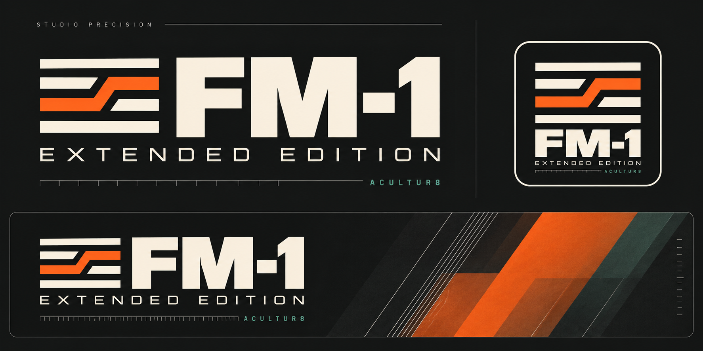

Make a pattern. Find a variation.
FM-1 Extended Edition, in your browser.
The latest pattern tools.
Explore 303 generation and single-note randomization, drum generation, repeating variations, Freeze / Store and cross-part copy. The on-screen FM-1 menus run the shared musical engine.
Where to find the new features
- 303 generation: select a 303 part and use its ARP / generation pages. Single-note randomization acts on the selected step.
- Drum generation: select 909 or 808, then ARP opens RHYTHM. Choose a drum lane with a black key.
- Variation: press ARP again to reach VARIATION and VAR OPTIONS. Temporary variations leave the saved base pattern unchanged until committed.
- Freeze / Store: capture a completed variation pass, then choose a destination and confirm its commit. Playback is needed to capture a pass.
- Scoped copy: GLOBAL → COPY/PASTE SEQUENCES selects the source, destination and compatible parts before confirmation.
- CC diagnostics: GLOBAL → CC MODE offers FULL / SIMPLE / OFF for this session.
This instrument saves on this website in this browser, separately from the earlier emulator and the Acultur8 beta site. It does not install firmware. Browser MIDI connections stay off until you explicitly enable them.
On a phone, swipe the instrument sideways to reach every control, or turn your phone for a larger panel.
Screen reader
X0X says what its screen shows, as it does on the FM-1 with the FM-1 Screen Reader: pages, knobs as you turn them, messages, help cards and lists.
909 kick · sound strip
Shape each selected sound before the mix. Use the instrument pads or PLAY to audition.
Switch on the FM1 panel to check sound-strip support.
808 paired tracks: RS/Clave tails and CP/Maracas tails are each summed before one strip. The selected sound’s Rev/Dly settings are used when active. BREAK currently has a mono source.
Gain reduction unavailable.
Waiting for the engine.
Arrangement · progression metadata
Arrange five pattern parts into blocks. Playing chord metadata is shared with enabled bass-follow in this local candidate. External accompaniment remains pending.
Switch on the FM1 panel to check arrangement support.
Editing — · Playing — · Queued —
Playing chord metadata unavailable.
Waiting for the engine.
303 A/B · chord follow
Choose how each bass follows the playing arrangement chord. Stop playback before changing follow mode or MIDI-note bounds.
Switch on the FM1 panel to check bass-follow support.
Playing chord metadata unavailable.
Off keeps the original absolute notes. Root/Chord uses the shared engine chord when arrangement is enabled and a positive chord degree is playing; a block with no chord retains legacy pitches. In strict follow mode, a range with no valid target produces no note. TIE cannot revive a rejected note: a new NOTE is required. Slides keep their intentional intermediate pitches. Pattern generators, mutation, rhythm and accent/slide settings are unchanged.
Waiting for the engine.
External MIDI chord pad · local preview
A connected MIDI instrument supplies the sound. Configure a dedicated channel and complete triad range while stopped, then play an arrangement. No internal pad synthesizer is added.
Switch on the FM1 panel to check external-pad support.
No playing chord metadata.
Engine ownership unavailable.
Waiting for the engine.
Browser/API timing has not been measured yet. Physical receiver delivery and audio/MIDI alignment remain unverified.
Connect MIDI is the only permission request. Device selection is not saved and reconnection never activates a route automatically. Stop playback before switching outputs. Cleanup remains assigned to the original output if it disconnects; reconnect it and use Retry. Closing a page can only attempt cleanup.
Sound lanes · local preview
Set a separate length and speed for each of the 25 sounds. Choose the pattern to edit independently of the pattern currently playing.
Switch on the FM1 panel to check lane support.
Clock mode unavailable.
Initialize while stopped. After initialization, grouped/independent switches keep every sound's settings and take effect at the next musical bar. Grouped mode uses each drum kit's BD clock; bass and BREAK keep their own clocks.
Enable while stopped after initializing lanes. Existing rhythms stay intact. Expanded projects use format 6; older firmware cannot open them.
No playing position available.
BREAK · 64 steps
Gate turns a step on or off. Generator keeps the pattern's generated slice choice; Slice 1–8 forces that slice. Steps beyond the chosen length stay stored.
Waiting for the engine.
Live timing edits are acknowledged first, then adopted at that sound's next local step. Edits to another pattern prepare it for later playback. Stop before Undo, Redo or Save. This editor sends internal engine commands. The separate MIDI CC input candidate has partial parameter coverage; physical-device testing remains pending.
MIDI CC automation input · candidate
Receive controller automation from one MIDI input. This route ignores keyboard notes, system messages and CC 120–127. It does not echo MIDI to an output.
Switch on the emulator to check the CC protocol.
No MIDI permission requested.
No CC input received.
Automation and panel edits share the project's Undo history. Automation applied during an open panel edit can be undone with that edit.
Connect MIDI input is the only permission request. Inputs are never restored or enabled automatically. After a pause or restart, explicitly retry and resend the complete controller selection and value. An overflow or missing receipt discards pending input and resets controller selection; already accepted or applied settings remain.
This is a development candidate with partial runtime coverage. An ingress receipt does not prove that a parameter changed. Compiled WASM integration, full parameter coverage, physical-device delivery and timing still require verification.
WAV + original slice markers
Have a REX file? Convert it in the local dashboard first, then select its matching _slices.wav and _markers.json here. The converter preserves the original slices and trigger timing. This standalone preview does not decode raw .rx2, .rex or .rcy files. REX conversion and import guide.
Import exact cuts and trigger positions for emulator audition. Up to 64 slices, mono/stereo WAV, 30 seconds of audio. This preview lane is separate from the FM1’s three flash slots and legacy eight-slice BREAK controls.
Choose WAV + CSV/JSON. Audio stays on this computer; no hardware upload occurs.
Sync starts both transports, or joins the next 4-beat bar if FM1 is playing. Instrument PLAY then controls both. Slice pitch stays unchanged.
Stopped
Exported marker JSON
This contains exact source sample bounds and original trigger times. Copy it into a .json file if your browser blocks the download.
Marker formats and REX conversion
CSV uses seconds: Slice,Start,End,Time. End and Time are optional: End defaults to the next start, Time to Start. JSON supports sampleRate, loopDuration, optional bpm, and slices: [{startSample, endSample, time, label}]. Source positions are WAV samples; time is the original onset in seconds. WAV sample rate must match the marker sampleRate.
Use the dashboard REX converter for original loops, or import its matching _slices.wav and _markers.json. Old Slice,Duration,Total CSV files do not contain original onset timing and are rejected; reconvert the REX. Read the illustrated FAQ. No cuts are guessed or reduced to eight.
Play with FM1 follows the internal sequencer clock and tempo, repeating the loop with its original beat length. It moves slice onsets while retaining their original pitch and duration; slower tempos can reveal gaps, faster tempos overlap tails. It does not stretch sustained audio. Physical FM1 storage is not implemented. Overlaps use up to eight voices and are validated. Source audio is not normalized; preview level is separate. Original timing is rounded only to the nearest 44.1 kHz output sample.
Your breaks
Load your own loops into the three slots, as you would upload them to the FM-1: one file per loop (WAV, AIFF or MP3), up to 16 in a slot, about 7 seconds per slot. X0X works out whether a loop is 1, 2 or 4 bars. To play one, choose BREAK with ALGORITHM, press EDIT until the LOOPS page, and turn KNOB 1. Your loops stay in this browser.
Mouse and touch
- Drag a knob up or down, or use the scroll wheel over it.
- Click or touch buttons and keys. Several fingers at once work on a touch screen.
- Combinations with a mouse: Shift-click (or right-click) a button to hold it down, click again to let go.
Keyboard
- Tab moves between the knobs, buttons and keys. On a knob, the arrow keys turn it (Page Up / Page Down faster). On a button or key, Space or Enter presses it for as long as you hold it; Shift+Space keeps a button held down until you press it again.
- While the FM-1 has focus, shortcuts play it: white keys 1–8 Q–I, 9–16 A–K; black keys 1–11 1–0, -; Space PLAY, Enter REC, Shift SEL (held), Esc HOME, Z / X OCT− / OCT+, ↑ ↓ turn SELECT.
Saving
SAVE keeps your patterns in this browser, as the FM-1 keeps them in its memory. Factory reset forgets them. It is the firmware, not a recording: what you hear is X0X running, at the FM-1's 44.1 kHz. The idea of running FM-1 firmware in the browser comes from Groove OS's emulator. The page's voice is eSpeak NG (GPL-3.0), from the FM-1 Screen Reader.